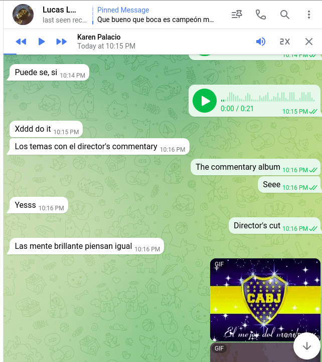

Bitácora de exploración sonora:
Alguien más
me vengo repitiendo
Tal vez alguien más lo puede pensar, y yo dedicarme a pensar en otra cosa.
Ahora que vengo usando mi push 2 casi todos los días. Tal vez sentarme a tomar un café y pensar otras cosas... hacer unos ruidos.
Es muy facil alejarse de la gente. Intento pensar que la gente va y viene. Un ondular orgánico. Pienso que siempre hay tiempo y espacio para reencontrarse.
O que si no se puede con esa persona, parte de esa persona vive en otras, y que hay algo más allá, en alguien más.
Algo ondulante que habita y circula entre varias personas.
Y sino que lo tengo que buscar en mí misma.
O tal vez alguien más puede pensar en eso, y yo dedicarme a pensar en otra cosa.
Lo intento pensar desde la narrativa, y situado. Una persona tomándose tres minutos para escuchar.
Y por atrás, yo tomándome varias horas para mostrar algo. Yo invitando a escuchar.
Yo invitando a escuchar
Todavía no tengo sillas, vienen mañana. Pero te imagino sentadx al lado mío.
Mirá
Yo invitando a escuchar a alguien más
Me gustó la idea de sentarme a mostrar, se la conté a lucas.

Classic lucas. Me encanta el agite, me motivó a seguir.
Se la conté a Mariano después, me salió distinto eso
Me gusta más mi risa de cuando le conté a lucas, pero salió así. Mariano me respondió con ideas para complejizar
Me encanta lo generoso que es con su opinión. Es el resultado de la escucha atenta y de que él tiene posiciones marcadas.
Es el cariño.
No es tan normal eso. Es muy fácil alejarse de la gente.